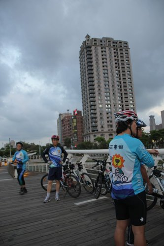
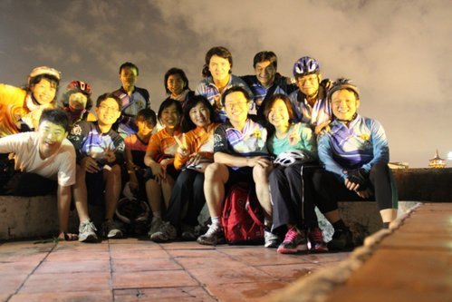
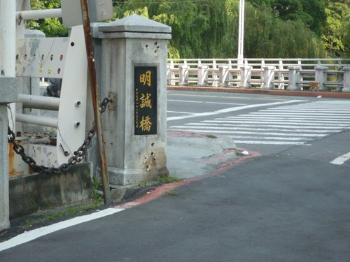

金色的流星劃過一季詭異的天空
接著迎向前的是另一個開始
灰黯徘徊 沈澱 再沈澱
亮光活躍 延伸 再延伸
如此周而復始……
是該為生命的韌性與輕柔喝采
因為每一天我們都是辛勤且珍惜著～～～
不論是淡定清爽的3月或是春暖花開的4月，都是單車族的幸福季節！善體人意的隊長、社長、副社長等人，於年度活動伊始，安排輕鬆的平面路線，既能緩解關節僵硬，亦足以汗流浹背，達到舒壓效果。
還記得吧？二年多前車隊騎了一次往西環繞高雄港的西臨港線和旗津環島自行車道，路程約30公里；這次精選路線和上次有異曲同工之妙，沿著愛河自行車道到蓮池潭，公里數相當。
（參考高雄市自行車道地圖官網：http://pwbgis.kcg.gov.tw/bicycle/2010Bike_Path.aspx）
時間：4.12傍晚～
本次路線：河東路→經中正橋、七賢橋、建國橋、中都橋→中都濕地公園→(美術東二路)願景橋→(中華路)治平橋→客家文物館→光之塔→愛河之心→(博愛路)彩虹橋→慈濟園區→(大順路)龍華橋→(明誠路)明誠橋、河堤社區→(過自由路)微笑公園→博愛路口右轉→生態園區捷運站→孟子路口過博愛路→左營光之橋→蓮池潭龍虎塔→鳳山縣舊城→海光餐廳→經鼓山路或中華路返回
夕陽西斜時，乘著餘暉，一路趕到愛河之心，自行車道蜿蜒在下面，上面的橋禁止騎車，所以我們都是牽車上去，吹風、賞景、聊天、拍照、與陌生人交談……都發生在橋上。


井然有序停好車

準備告別白晝

來了七仙女
七位男騎士更是了得，完全符合入社標準─英俊瀟灑
趕在夜幕低垂時，來到光之橋，與蓮池潭內建築物互相輝映，更顯得獨具風格。
這時我們愛上十連拍，可感謝超哥不惜形象的趴在地上對焦，這彷彿敘述民間傳說故事的某個橋段。

斑駁的舊城門歷盡滄桑，至今屹立不搖，輪到我們到此延續這樣的故事。
城內，狹小的舊巷道中有著排列整齊的新舊交錯的屋舍，輕風拂面，感覺十分舒服 ，可惜時候已晚，匆匆經過，來不及細細品味。
，可惜時候已晚，匆匆經過，來不及細細品味。
另一個目的地是到附近有名的海光餐廳，給自己充電。
這裡有名的是蒸臭豆腐、烤鴨三吃、小籠包、涼麵、葱油餅……，而且十分有飽足感呢！
以下是我們的招牌明星群：
「Hi! 我們的行程很棒吧！趕緊來入社！」


經過以上新春訓練，女生更美、男生更帥，我們又平安快樂的過了一天！
～～～～～～～～～～～～～～～～～～～～～～～～
基於當天為了趕路來不及拍照的遺憾，我再次走一趟這條經典的休閒自行車道，當中有不少景點值得攜家帶眷到此享受休閒時光。
【中都濕地公園】
官網介紹 http://pwbgis.kcg.gov.tw/zhongdu1/main/default.html
從紅色的中都橋、中都磚窯廠、到願景橋間，不論散步或騎車，都很適合。馬路對面是中都濕地公園的主建築物，舊面貌更新，除了保存原有生態，並打通周圍28條道路，重塑都市新生命。
在中都橋附近愛河河岸種植成排這種垂垂的樹木，很特別。
這些樹在過去並不起眼，經過整修加持下，現在看起來竟是那麼地優雅。而樹下躺著的是悠閒的狗兒們。5月正是棕櫚科和阿勃勒開黃花及結果的熱鬧季，要撿拾阿勃勒長長硬硬的果實〔用來捶背〕正是時候。

【願景橋】
溝通中都園區與美術館區的是這一條新設的願景橋，101.1先通車，101.4完工。橋上有自行車道。
願景．橋
往中華路前進，治平橋旁設立風帆般的閘道。
治平橋
往客家文物館方向〔東北方〕續行，河床整修成二層，這一段路上樹木茂盛，都有樹蔭擋陽光。
【客家文物館】
官網介紹 http://kc.kshs.kh.edu.tw/ss/culture/hakka/ka_index.html
客家文物館廣場前一早即有不少人。
綠草如茵，空氣清新，另有一群人在做運動。
再往前幾步就到──
【光之塔】
光之塔前的橋，如機器恐龍。
【愛河之心】
官網介紹 http://pwbgis.kcg.gov.tw/Loveflood/instruct.htm
晚上伴隨璀燦奪目燈光，遊客如織，假日裡彷若市集。
我們就是從這橋的入口，牽車上去的。（有禁止騎車標示）
從橋上過博愛路
平面路口人行及單車專用紅綠燈，綠燈亮時音樂響起，提醒行人趕快走過去。
過博愛路就看到──
【慈濟園區】
官網介紹 http://www2.tzuchi.org.tw/case/show-40/08/08-index.html
早上七點多，慈濟園廣場上已來了很多志工 ，這裡遇到一位師兄，且向我道早安。
，這裡遇到一位師兄，且向我道早安。
繼續前進是一處愛河截流站
附近河床地整理成公園
過大順路是河堤公園，前面是新上國小。
過明誠路是最早整修的河堤公園〔來自長谷造鎮〕

到此路口有一點點複雜 ，左轉、過馬路、沿河道續行。
，左轉、過馬路、沿河道續行。
河堤公園常見兒童遊樂場
新莊仔天后宮便是此段〔河堤公園〕終點〔自由路口 〕

過自由路是微笑公園
公園裡也有廟，這附近的廟香火很旺。
又見兒童遊樂場
圍牆內是新莊國小操場
一直往前又會遇到博愛路
到博愛路口往右是捷運站
那天在此路口過馬路，穿過民宅到蓮池潭。
 這之後的路線就得請教小獅隊長了。
這之後的路線就得請教小獅隊長了。
所以說，大家一起來騎是最好的，因為有人帶路啦！
(end)
最棒的悠騎路線，盡在河東獅單車社。別忘了六月起,每周二17:30的約騎ㄡ.